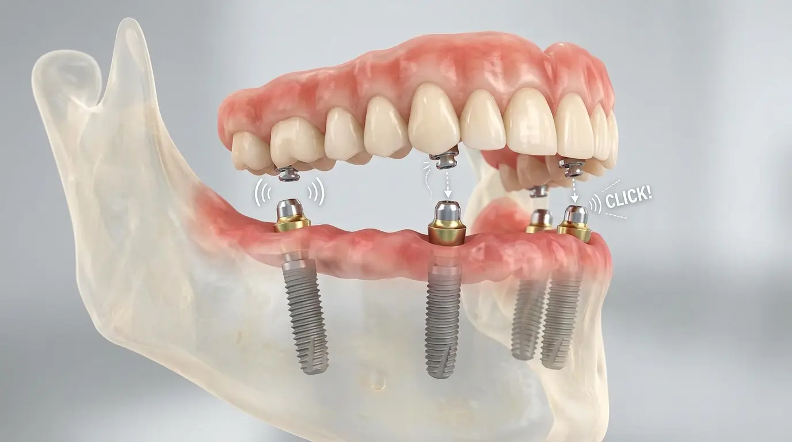

שיניים תותבות על שתלים: המדריך המלא לסוגים, מחירים ויתרונות (2026)
השורה התחתונה:
- תותבת על שתלים (תיק-תק) ננעלת ב"קליק" על 2-4 שתלים דנטליים ומעניקה יציבות מלאה.
- כוח הלעיסה גדול פי 3-5 מתותבת רגילה, ללא צורך בדבק תותבות.
- מחיר: 15,000 – 30,000 ₪ ומעלה (כולל שתלים, מחברים ותותבת).
- השתלים מונעים ספיגת עצם – הבעיה המרכזית אצל מרכיבי תותבות רגילות.
- את ההתאמה הסופית של התותבת לשתלים ניתן לבצע בביתכם.
רבים ממרכיבי התותבות המלאות מכירים את התופעה המתסכלת: התותבת העליונה בדרך כלל יושבת מצוין בזכות הוואקום עם החיך, אך התותבת התחתונה זזה, רוקדת, ולעיתים אף קופצת החוצה בזמן דיבור ואוכל. הפתרון המתקדם ביותר לכך כיום הוא שיניים תותבות על שתלים (תותבות נתמכות שתלים או תותבות מתקליקות). במדריך זה נפרט את כל מה שצריך לדעת: סוגי השיטות, השוואת יתרונות וחסרונות, מחירים, ולמי זה מתאים.
איך עובדת תותבת על שתלים?
במקום שהתותבת תשב רק על גבי החניכיים, רופא השיניים מחדיר מספר קטן של שתלים דנטליים (בורגי טיטניום) לעצם הלסת. לאחר תקופת קליטה של כ-3-6 חודשים, מחברים לשתלים תפסנים. בתותבת עצמה מטמיעים חלקים תואמים. כאשר מרכיבים את התותבת לפה, החלקים מתחברים ב"קליק" שמעגן את התותבת בצורה חזקה ויציבה.
שיטות עיגון תותבת על שתלים – השוואה
קיימות מספר שיטות עיגון, וההתאמה תלויה במצב הקליני, מספר השתלים ותקציב המטופל:
1. תותבת תיק-תק (Locators / כפתורים)
השיטה הנפוצה והפשוטה ביותר. על כל שתל מותקן תפסן עגול (כפתור), ובתותבת מוטמעות "כיפות" גומי תואמות. ברגע ההרכבה, הכפתורים ננעלים בכיפות ב"קליק". מספיקים 2 שתלים בלסת התחתונה (4 מומלצים בלסת העליונה). הגומיות ניתנות להחלפה כל 6-12 חודשים בעלות זניחה.
2. תותבת על מוט (Dolder Bar)
שיטה מתקדמת יותר: מוט מתכת מחבר בין 2-4 שתלים, והתותבת "רוכבת" על המוט באמצעות קליפסים. שיטה זו מעניקה יציבות מקסימלית וכוח לעיסה מרבי, אך דורשת עבודת מעבדה מורכבת יותר ועלותה גבוהה יותר.
3. All-on-4 / All-on-6 (תותבת קבועה על שתלים)
שיטה שבה גשר שיניים שלם (לא נשלף!) מותקן באופן קבוע על 4 או 6 שתלים. מדובר בפתרון הקבוע ביותר, שנחווה כמעט כמו שיניים טבעיות. המחיר הוא הגבוה ביותר, אך התוצאה היא חיוך קבוע שלא יוצא מהפה כלל.
טבלת השוואה בין שיטות העיגון
| שיטה | מספר שתלים | יציבות | טווח מחירים (₪) |
|---|---|---|---|
| תיק-תק (Locators) | 2-4 | גבוהה מאוד | 15,000 – 25,000 |
| מוט Dolder Bar | 2-4 | מקסימלית | 20,000 – 35,000 |
| All-on-4 (קבוע) | 4-6 | מוחלטת (לא נשלף) | 35,000 – 60,000+ |
* המחירים כוללים שתלים, מחברים ותותבת. עשויים להשתנות בהתאם למורכבות ולאזור המגורים.
תותבת רגילה מול תותבת על שתלים – השוואה מלאה
כדי להבין את היתרונות, הנה השוואה ישירה בין תותבת נשלפת רגילה לבין תותבת נתמכת שתלים:
| קריטריון | תותבת רגילה | תותבת על שתלים |
|---|---|---|
| יציבות | נמוכה-בינונית; זזה בזמן אכילה ודיבור | גבוהה מאוד; ננעלת על השתלים |
| כוח לעיסה | כ-20-30% מכוח שיניים טבעיות | כ-60-80% מכוח שיניים טבעיות |
| צורך בדבק | לעיתים קרובות כן | לא. אף פעם. |
| ספיגת עצם | מתרחשת – העצם נספגת לאורך השנים | נמנעת – השתלים שומרים על העצם |
| מחיר (ללסת) | 4,500 – 7,000 ₪ | 15,000 – 30,000+ ₪ |
| ביטחון חברתי | חשש שהתותבת תיפול | ביטחון מלא – לא תיפול |
למי מתאימה תותבת על שתלים?
תותבת על שתלים מתאימה למגוון רחב של מטופלים:
- מי שהתותבת התחתונה זזה ונופלת – הבעיה הנפוצה ביותר שתותבות על שתלים פותרות.
- מי שנמאס לו מדבק תותבות – שתלים מבטלים את הצורך לחלוטין.
- אנשים שרוצים לחזור לאכול מזון רגיל – בשר, תפוחים, אגוזים – בלי פחד.
- מטופלים בכל גיל – אין הגבלת גיל, כל עוד מצב הבריאות הכללי מאפשר ניתוח קטן.
- מי שסובל מספיגת עצם מואצת – שתלים מעכבים את התהליך.
💡 חשוב לדעת: במקרים של מחסור חמור בעצם, ייתכן שיידרש שתל עצם מקדים (Bone Graft) לפני ההשתלה. רופא השיניים יבצע צילום פנורמי (או CT) כדי להעריך את כמות העצם הזמינה.
היתרונות העצומים של תותבות על שתלים
- יציבות מקסימלית: התותבת אינה זזה גם בזמן אכילת מזון קשה כמו תפוחים או בשר, ואין צורך יותר להתעסק עם דבק תותבות.
- שמירה על העצם: השתלים שבעצם מעודדים אותה להישאר חזקה ומונעים את ספיגת העצם המהירה שמתרחשת כשלובשים תותבות רגילות שזזות.
- איכות חיים ודיבור: התותבת הקבועה לא משמיעה "קליקים" של פלסטיק בזמן דיבור ומונעת מצבי מבוכה חברתית.
- קלה לניקוי: מכיוון שמדובר בתותבת נשלפת (בשיטות Locator ו-Bar), עדיין ניתן (וחובה) להוציא אותה בלילה ולצחצח את השתלים עצמם בקלות וביעילות.
- תוצאה לטווח ארוך: שתלים דנטליים מיוצרים מטיטניום ומחזיקים עשרות שנים. ההשקעה חוסכת עלויות חוזרות של דבק, ריפודים וריפוי פצעי לחץ.
האם טיפול זה ניתן לביצוע בבית?
החדרת שתלים היא פעולה כירורגית המבוצעת במרפאה סטרילית בלבד. אנו משתפים פעולה עם מומחים להשתלות ומלווים את המטופל לאורך כל התהליך.
עם זאת, אם כבר יש לכם שתלים בפה, את כל תהליך המדידות, ייצור התותבת עצמה והתאמתה לשתלים ניתן בהחלט לבצע במסגרת ביקורי בית על ידי רופא מוסמך המצויד כהלכה. אנו יכולים לדאוג להתאמת התותבת הסופית, כולל חיבור המחברים לשתלים, בנוחות של ביתכם.
שאלות נפוצות – תותבות על שתלים
כמה עולה תותבת על שתלים?
העלות הכוללת (שתלים + מחברים + תותבת) נעה בין 15,000 ל-30,000 ₪ ומעלה, בהתאם למספר השתלים, שיטת העיגון (תיקתקים/מוט) ואיכות החומרים. פתרון All-on-4 קבוע יכול להגיע ל-35,000-60,000 ₪. לפירוט מלא על מחירי שיניים תותבות.
כמה שתלים צריך לתותבת על שתלים?
בלסת התחתונה מספיקים לרוב 2 שתלים, אם כי 4 שתלים נותנים יציבות טובה יותר. בלסת העליונה מומלצים 4 שתלים לפחות עקב מבנה העצם הרכה יותר. הרופא יקבע את המספר האידיאלי לאחר צילום ובדיקה קלינית.
האם התהליך כואב?
השתלת שתלים מתבצעת בהרדמה מקומית ולרוב אינה כואבת יותר מעקירת שן. לאחר הניתוח יש נפיחות קלה ל-2-3 ימים שנשלטת היטב עם משככי כאבים רגילים. רוב המטופלים חוזרים לשגרה תוך יום-יומיים.
כמה זמן מחזיקים השתלים?
שתלים דנטליים עשויים מטיטניום רפואי ומתוכננים להחזיק עשרות שנים ואף לכל החיים, בתנאי שמקפידים על היגיינת פה ובודקים אותם אצל רופא מדי שנה. התותבת עצמה עשויה לדרוש ריפוד או החלפת גומיות מדי כמה שנים.
האם תותבת על שתלים מתאימה לגיל מבוגר?
בהחלט. אין הגבלת גיל. גם מטופלים בני 80 ו-90 עוברים השתלות בהצלחה. התנאי העיקרי הוא מצב בריאותי כללי סביר (ללא סוכרת לא מאוזנת או דילול דם שלא ניתן להפסקה זמנית).
נמאס לכם מהתותבת שנופלת?
צרו קשר לייעוץ וקבלו את כל הפרטים על פתרונות קיבוע תותבות שישפרו את איכות חייכם ללא היכר. את התאמת התותבת הסופית לשתלים ניתן לבצע בנוחות של הבית.
צרו קשר לייעוץ אישי